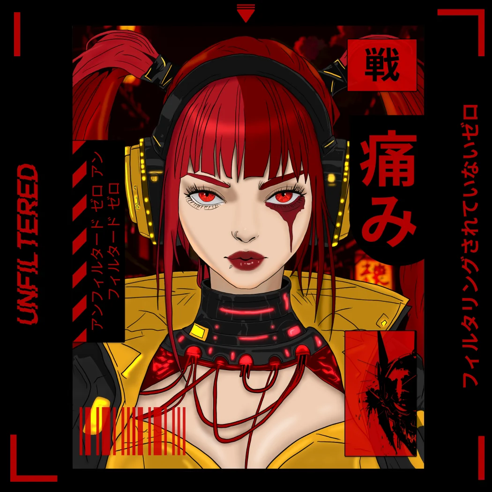
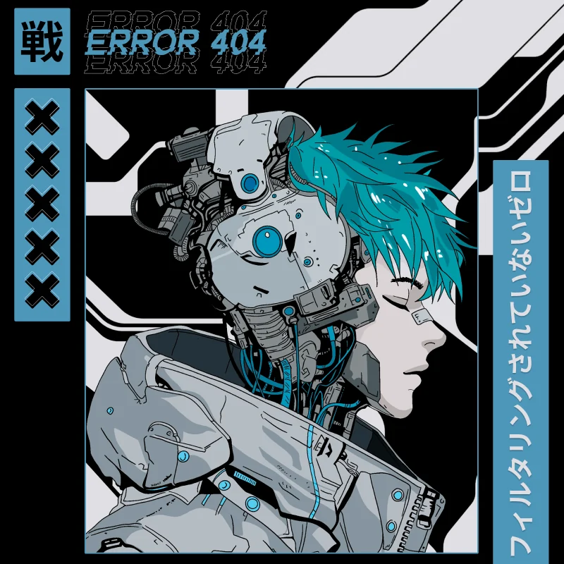

Creative Lab
Not all work fits the grid.
Character design, cyberpunk worlds and visual experimentation beyond client constraints.


Character design, cyberpunk worlds and visual experimentation beyond client constraints.
Personal / Creative Experiments
Illustration · Character art · Visual exploration
Illustration / Cyberpunk / Digital art / Art direction
Understanding
the work.
An independent creative space for exploring composition, futuristic motifs, high contrast and distinct character aesthetics.
Designing with
intention.
The curation highlights different visual directions — not repetitions of one illustration — while keeping a recognizable cyberpunk sensibility.
Visual worlds.
Illustration, character studies and graphic experiments with their own visual language.
Each piece represents a real visual execution or design document. Campaign performance, research findings and personal ownership are not presented as measured results without supporting evidence.